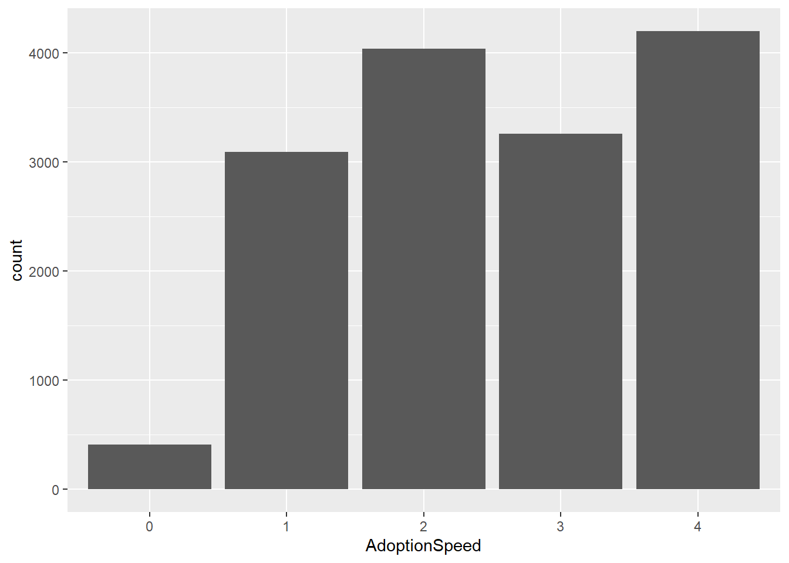
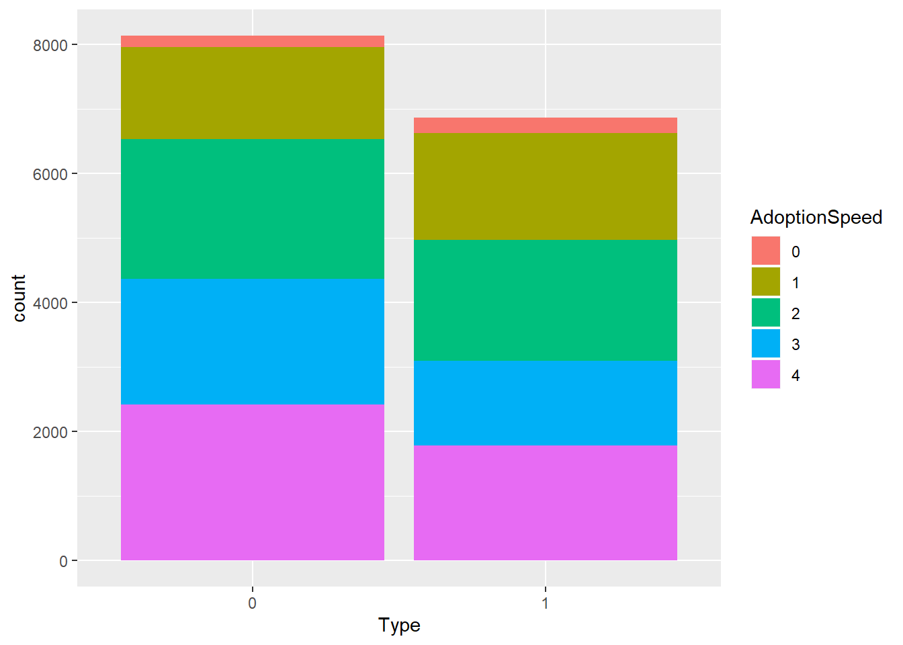
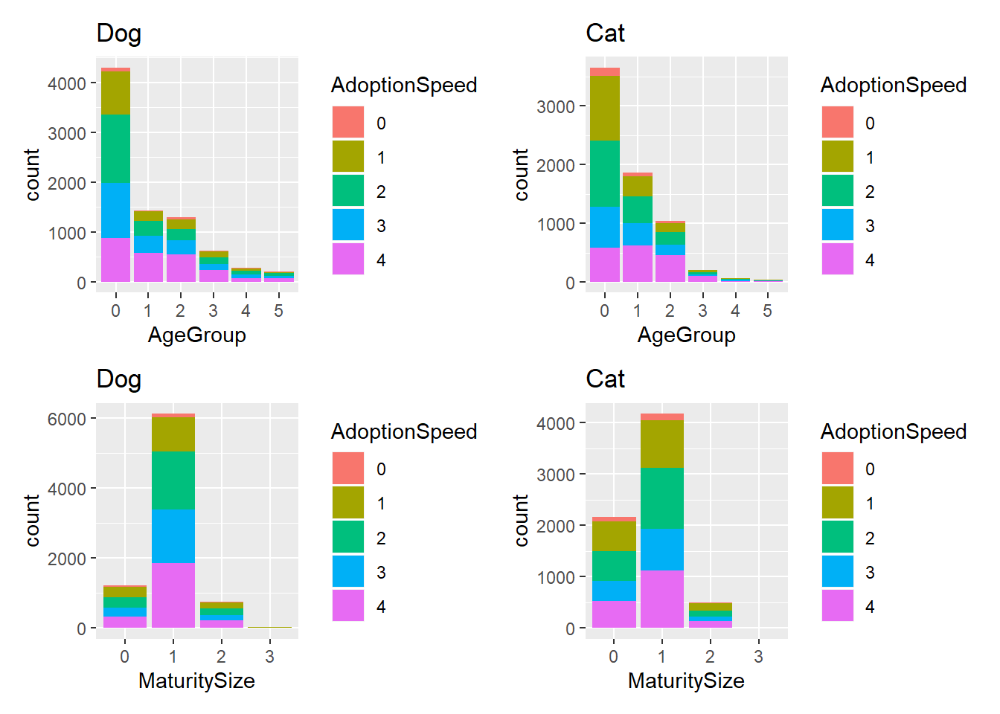
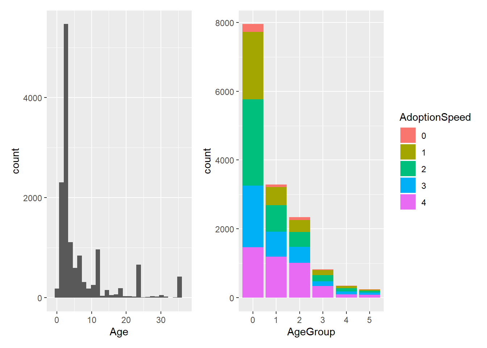
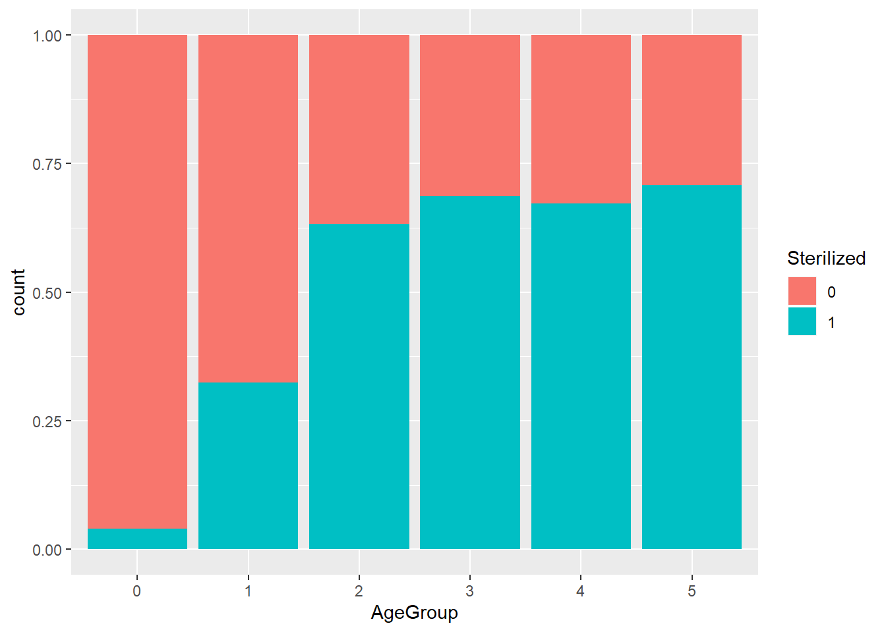
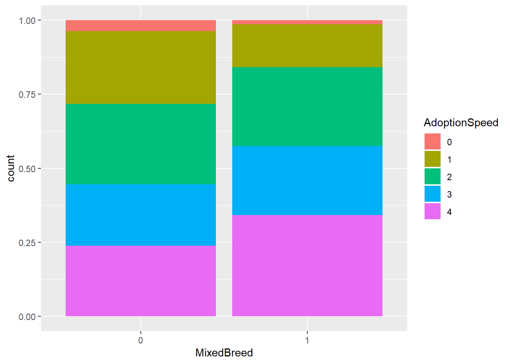
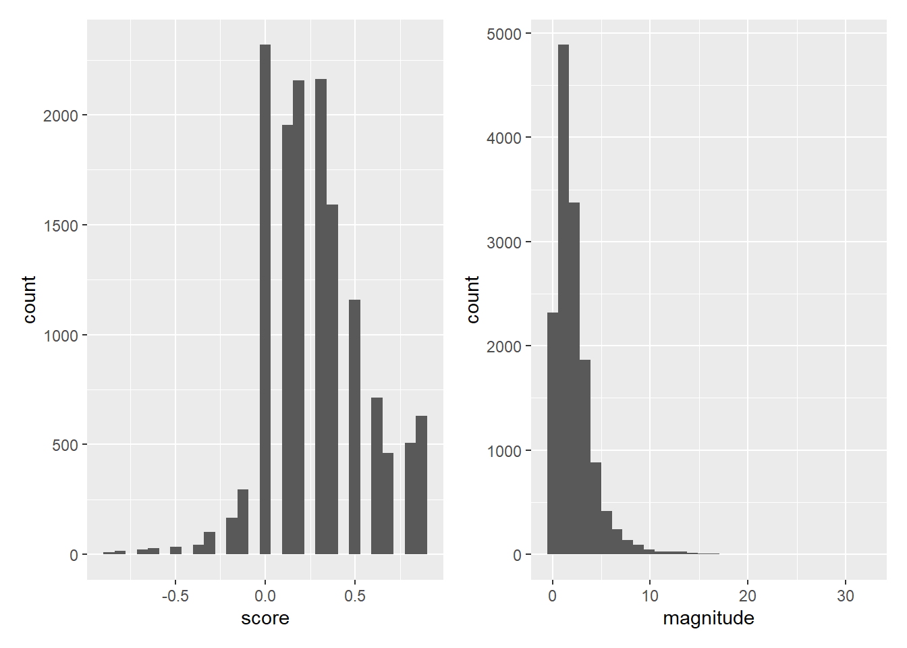
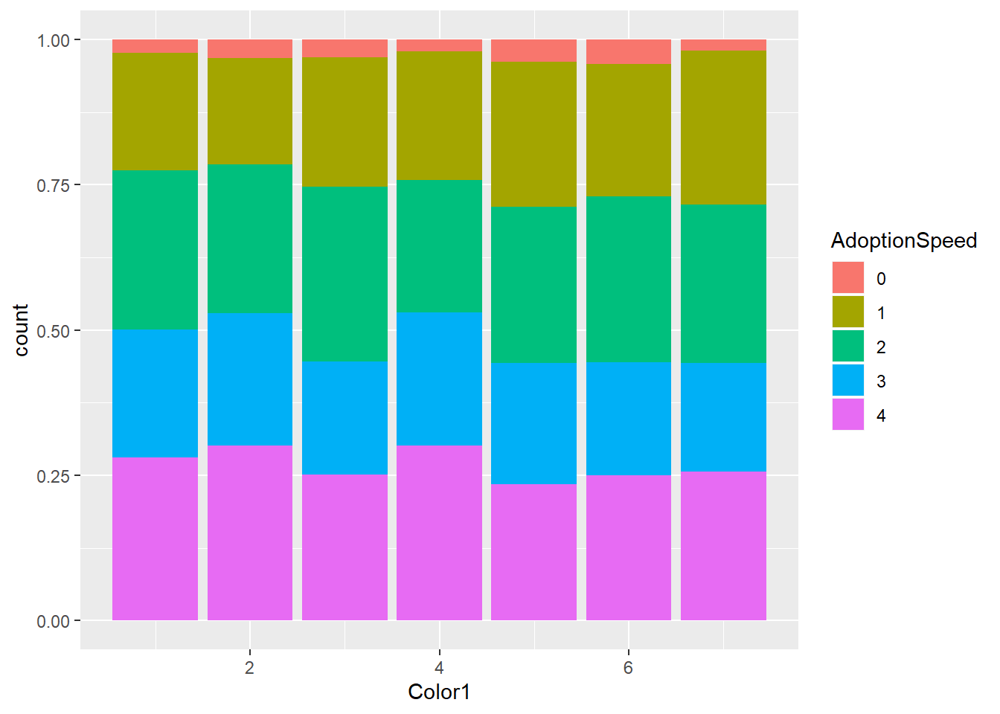

Chapter 3 Data Exploration
In this chapter, I will explain my data source, demonstrate visualizations and data cleaning strategy that helped inform my modelling process.
3.1 Data Source
I found this data on kaggle, it is provided by PetFinder.com, the largest online platform for animal adoption in Malaysia. This data is collected by PetFinder.com since 2008 to 2019 regarding the information about cats and dogs and their adoption speed. Link to this data: https://www.kaggle.com/c/petfinder-adoption-prediction/data
3.2 Variable Table
Below is a table for all the variables I will be exploring in this chapter.
| Variable | Key |
|---|---|
| Type | 0 dog; 1 cat |
| Health | 0 healthy; 1 minor injury; 2 severe injury |
| Sterilized | 0 not sterilized; 1 sterilized |
| Vaccinated | 0 not vaccinated; 1 vaccinated |
| Dewormed | 0 not dewormed; 1 dewormed |
| Age Group | 0: 0-3 months; 1: 4-11 months; 2: 12-30 months; 3: 31-59 months; 4: 60-82 months; 5: 83 months or older |
| Mixed Breed | 0 not mixed breed; 1 mixed breed |
3.3 Visualizations
Now for some visualizations!
3.3.1 General Impressions
From the bar graph, we can see that it’s very rare for animals to get adopted on the day of listing. First, let’s look at pet adoption speed in general. We can see very little animals are adopted on the day that they arrived at the shelter, roughly 1/5 of the animals are adopted in less than a week, 1/5 of the animals are adopted between 2-3 months. 1/4 of the animals are adopted between 8-30 days, and slightly more than 1/4 of the animals are adopted after 100 days of being listed. What is causing the difference between adoption speeds?

3.3.2 Type
Let’s look at how adoption speeds can differ by animal types. For this variable, I cleaned it so 0 would indiate dog, and 1 to indicate cat. We can see that there are more dogs than cats, and cats get adopted faster than dogs. This might be due to the fact that many Malaysians are Muslim and it is against their religion to come in contact with dogs. Furthermore, dogs in general require a lot more effort and care than cats, making adopting dogs a bigger commitment.

This makes me wonder if people evaluate cats and dogs differently. Let’s check out two more visualizations of how age and size can impact dog and cat adoption separately. Our visualizations below doesn’t seem to show a big difference between people’s adoption criteria for cats and dogs. Therefore, we will be using “Type” as sa variable in this model.
p1<-adoption %>%
filter(Type==0) %>%
ggplot(aes(x=AgeGroup,fill=AdoptionSpeed))+geom_bar()+ggtitle("Dog")
p2<-adoption %>%
filter(Type==1) %>%
ggplot(aes(x=AgeGroup,fill=AdoptionSpeed))+geom_bar()+ggtitle("Cat")
p3<-adoption %>%
filter(Type==0) %>%
ggplot(aes(x=MaturitySize,fill=AdoptionSpeed))+geom_bar()+ggtitle("Dog")
p4<-adoption %>%
filter(Type==1) %>%
ggplot(aes(x=MaturitySize,fill=AdoptionSpeed))+geom_bar()+ggtitle("Cat")
(p1|p2)/(p3|p4)
3.3.4 Age and Age Group
Another informative variable will be Age. Many people would be more inclined to adopt puppies and kittens. Let’s look at the general age distribution. We see that most of the animals are younger than 1 year old, and there are small spikes at 24 and 36. This is probably because it is hard to determine the animal’s age by month, so many people probably just report the approximate age of the animal in year. Moreover, a 2-year-old animal probably won’t be a lot more likely to get adopted faster than a 3-year-old animal. Therefore, putting the age into groups would probably be a better approach. I grouped the age by similar distribution of adoption speed. Age groups 0-5 correspond to animals aged 0-3,4-11,12-30,31-59,60-82,and 82 and older months, respectively. We could see that young animals are more likely to get adopted faster.
p9<-adoption %>% ggplot(aes(x=Age))+geom_histogram()+xlim(-1,37)
p10<-adoption %>%
ggplot(aes(x=AgeGroup,fill=AdoptionSpeed))+geom_bar()
p9|p10
Now, let’s dig deeper into the relationship between Age and health outcomes. We can see that younger animals (particularly those in age group 0 and 1) are less likely to get sterilized. This is probably because the animals are too young for the procedure to be done before they were adopted.

3.3.5 The mysterious Breed 307
When I’m exploring breed, breed 307 seems to make up about 1/3 of the data. We can also see that breed 307 is more likely to get adopted slower than other breeds. It turns out this is mixed breed! This makes sense since people might not consider mixed breed animals as attractive.

3.3.6 Other factors
There are some other factors that I thought would be significant but turns out to be false. For example, magnitude and score. “magnitude” and “score” are the two variables related to description sentiments. These are generated by Google’s Natural Language API. I extracted these variables from the json files and added them to my data. “Score” refers to how negative and positive the description is, -1 being the most negative, 1 being the most positive. “Magnitude” indicates the strength of the description. Almost all descriptions have a positive score since this is a pet adoption website, and the magnitude of the descriptions seem to be pretty similar from each other.
p10<-adoption %>%
ggplot(aes(x=score))+geom_histogram()
p11<-adoption %>%
ggplot(aes(x=magnitude))+geom_histogram()
p10|p11
I also thought that the main color of the animals could be informative. However, the visualization does not show any apparent difference between color and adoption speed.
